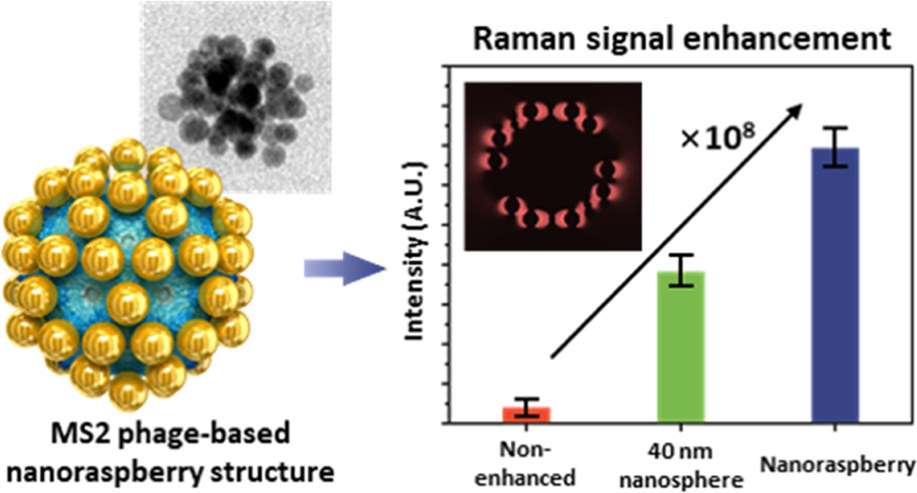
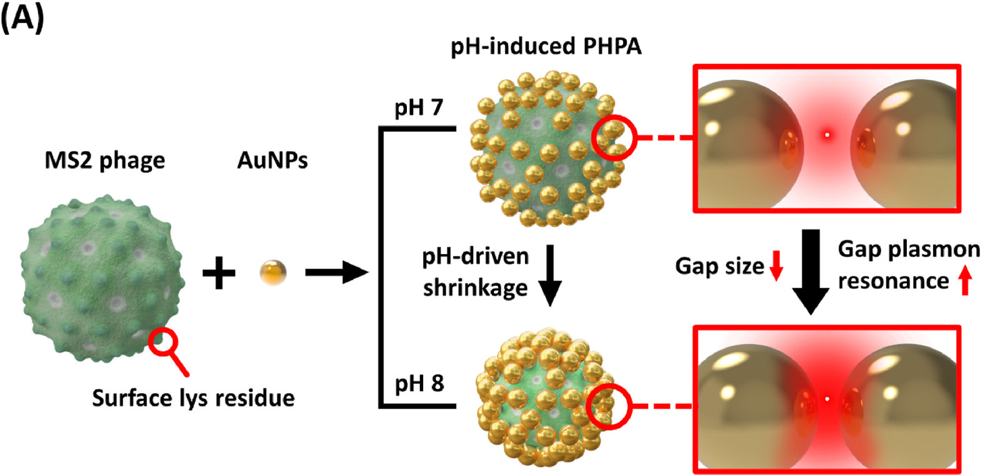
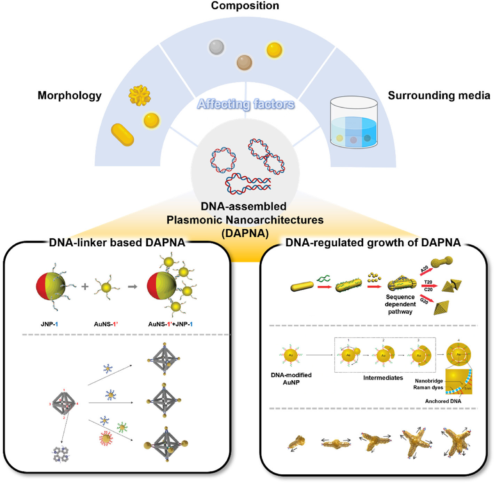
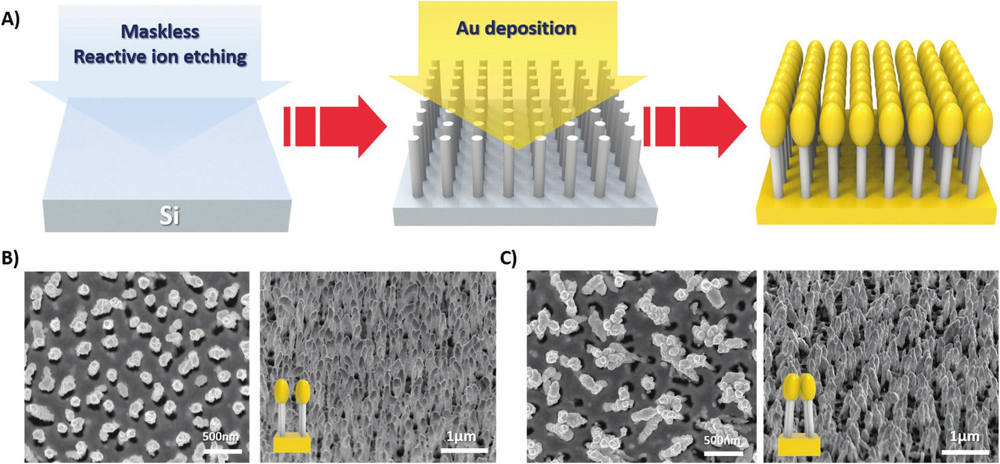
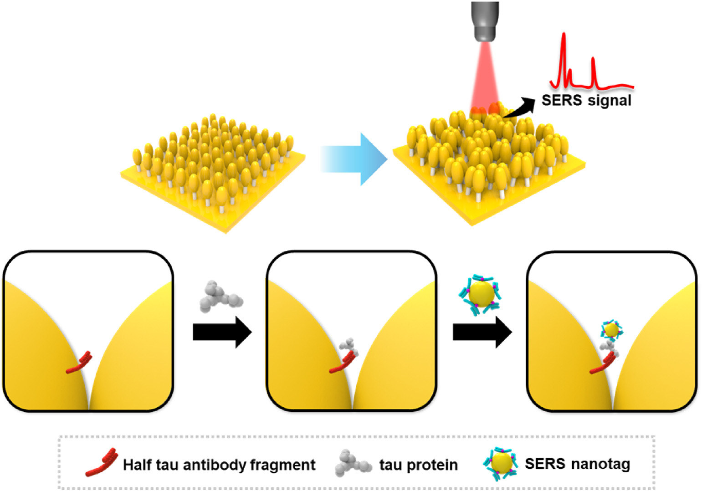
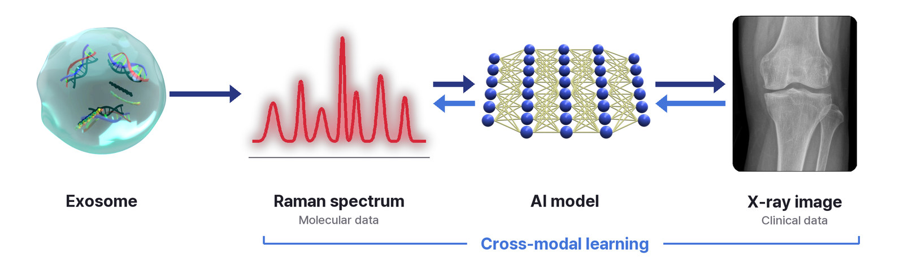

Research
WET LAB
Plasmonic Biosensing — 플라즈모닉 나노소재와 SERS(표면증강 라만 산란)를 기반으로 극미량의 질병 바이오마커를 검출하는 초고감도 바이오센서를 개발합니다.Plasmonic Biosensing — we develop ultrasensitive biosensors that detect trace disease biomarkers, based on plasmonic nanomaterials and surface-enhanced Raman scattering (SERS).
Nanoparticle Synthesis
금·은 등 귀금속 나노입자의 크기, 모양, 조성, 입자 간 간격을 설계하고 합성해 라만 신호를 크게 증폭하는 플라즈모닉 나노구조를 만듭니다.We design and synthesize noble-metal nanoparticles such as gold and silver, tuning their size, shape, composition and interparticle gaps to create plasmonic nanostructures that strongly amplify Raman signals.



SERS Substrate Fabrication
미세·나노 가공 기술로 신호가 강하고 균일하며 재현성이 높은 SERS 기판을 제작하고, 시료와 측정 환경에 맞게 최적화합니다.Using micro- and nanofabrication, we build SERS substrates with strong, uniform and reproducible signals, optimized for each sample type and measurement setting.

SERS Measurement
다양한 임상 시료 속 바이오마커를 SERS로 측정하고, 높은 민감도와 재현성으로 신호를 정량합니다.We measure biomarkers in diverse clinical samples by SERS, quantifying their signals with high sensitivity and reproducibility.

DRY LAB
SERS 데이터를 비롯한 분자 데이터와 임상 데이터를 AI로 분석해 질병 진단과 예측에 활용합니다.We analyze molecular data, including SERS data, and clinical data with AI for disease diagnosis and prediction.
AI Clinical Analysis
분자 데이터와 임상 데이터를 전처리하고 머신러닝·딥러닝 모델로 학습해 질병을 진단하고 진행을 예측하며, 판단 근거가 되는 특징을 해석합니다.We preprocess molecular and clinical data and train machine learning and deep learning models to diagnose disease and predict its progression, and to interpret the features behind each prediction.


Raman Cross-modal
분자 데이터와 임상 데이터처럼 서로 다른 모달리티를 함께 학습해 두 데이터 사이의 관계를 찾고, 새로운 진단 지표를 만듭니다.We jointly learn different modalities, such as molecular and clinical data, to uncover how they relate and to build new diagnostic indicators.
